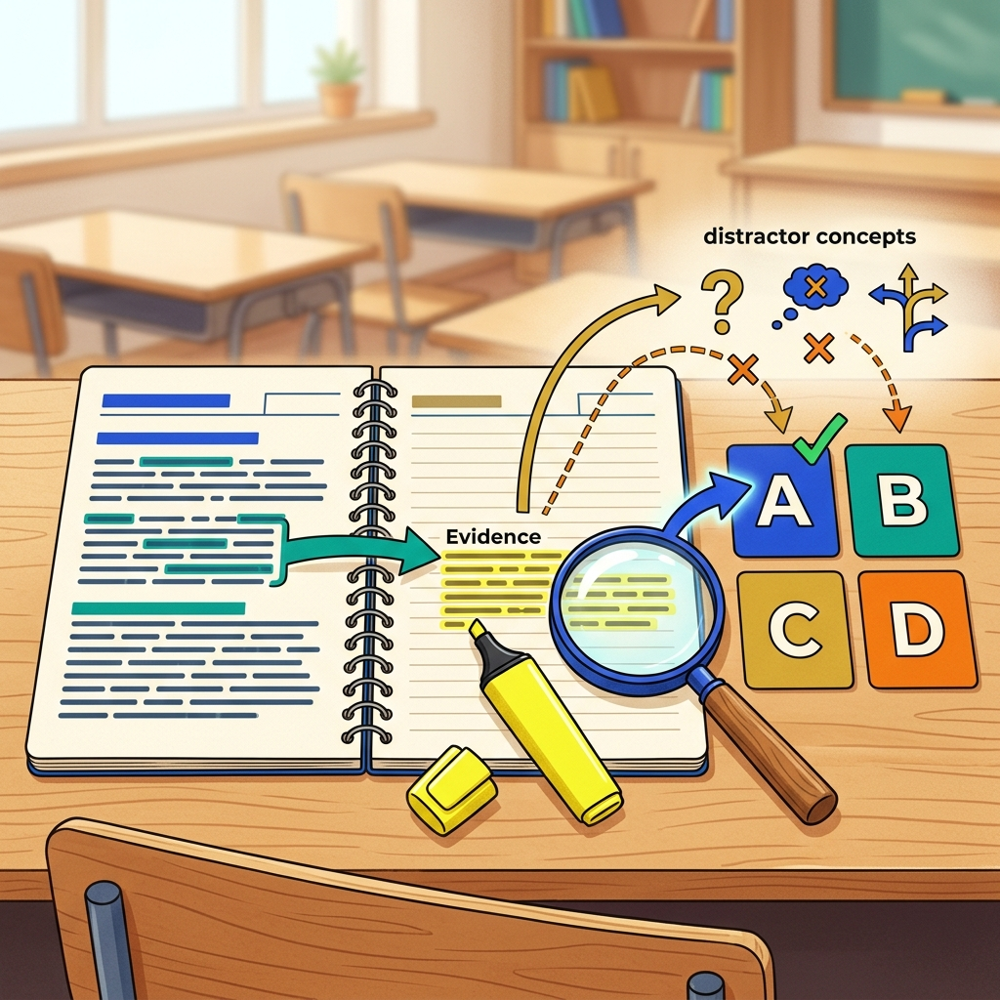
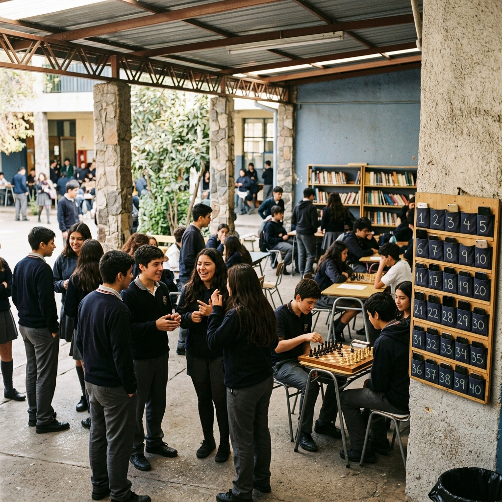
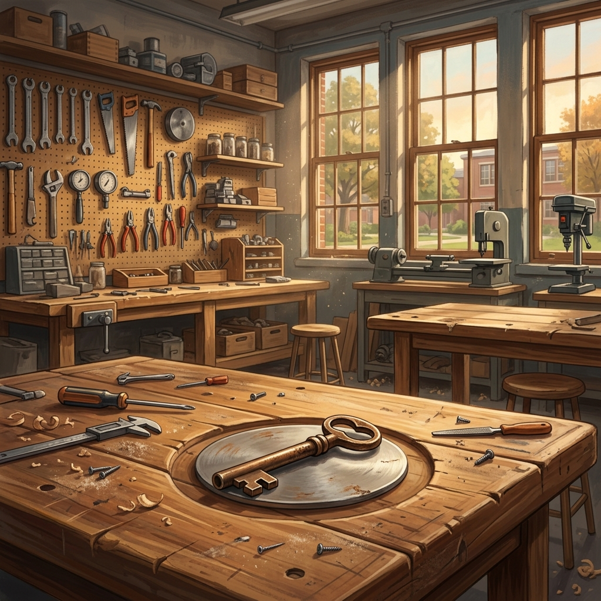
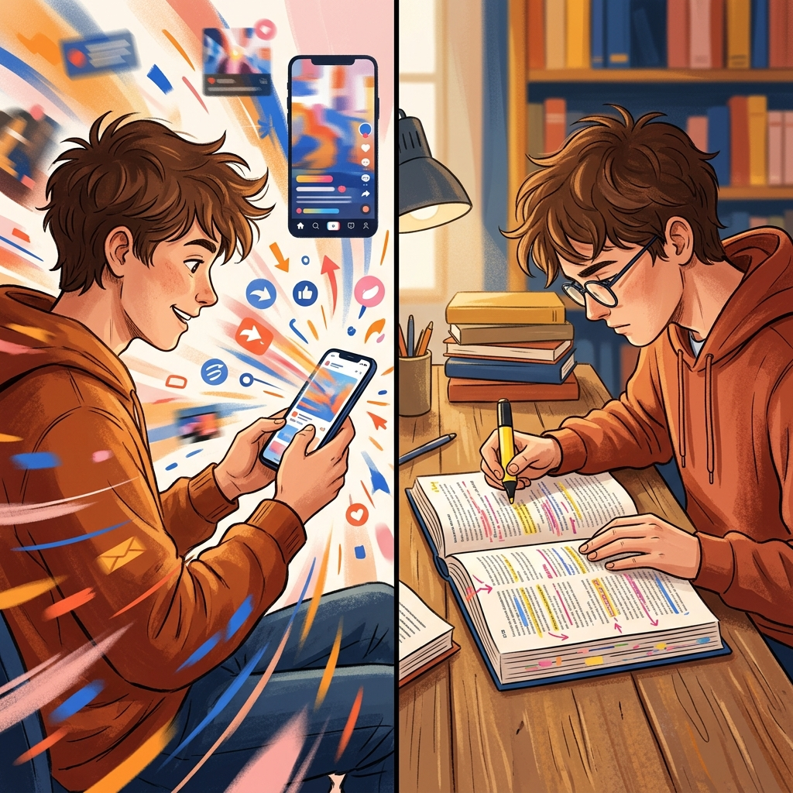

Concepto clave 1
Evidencia textual
Es el fragmento del texto que permite defender una respuesta. Puede ser una frase literal o una relación entre dos partes del texto, pero nunca una impresión suelta del lector.
En esta clase vas a leer cinco textos, relacionar conceptos, justificar respuestas y desmontar distractores con evidencia. Además, sumarás, restarás y calcularás porcentajes simples a partir de tablas y gráficos para decidir con fundamento.
Entra a la lectura con una meta clara: encontrar evidencia, desconfiar de las opciones que solo suenan bien y reconocer los errores que aparecen con más frecuencia cuando marcas apurado.

Apoyo visual · Evidencia, respuesta y distractorEs el fragmento del texto que permite defender una respuesta. Puede ser una frase literal o una relación entre dos partes del texto, pero nunca una impresión suelta del lector.
No es la alternativa “que suena mejor”. Es la que se puede sostener con una pista concreta, una relación textual verificable o una lectura coherente del conjunto.
Es una alternativa plausible que falla por una razón precisa: cambia el foco, exagera un dato, fuerza una lectura literal o inventa algo que el texto nunca respalda.
La alternativa recoge una idea real del texto, pero responde a otra pregunta. Es la trampa más frecuente cuando el estudiante lee rápido y marca por cercanía verbal.
El texto dice “algunos”, “varios” o “en ciertos casos”, pero la alternativa sube el volumen a “todos”, “siempre” o “nunca”.
La opción parece razonable por conocimiento general o intuición, pero no tiene apoyo interno. Si no se puede mostrar la pista, no sirve.
| Si pasa esto... | Recuerda que... |
|---|---|
| Las cuatro opciones parecen posibles | No elijas por sonido o longitud: vuelve a la pregunta y busca la pista que realmente la sostiene. |
| Una opción toma una idea real del texto | Todavía puede fallar por cambio de foco: una idea verdadera no siempre responde lo que te preguntan. |
| Aparece un “todos”, “siempre” o “nunca” | Revisa si el texto de verdad dice eso o si la alternativa está exagerando una idea más acotada. |
Porque la alternativa está reemplazando un alcance acotado por uno absoluto. Ese salto parece pequeño, pero cambia el sentido de la evidencia.
No. Puede fallar por cambio de foco: toma un dato verdadero, pero no responde a lo que pregunta el ítem.
Se descarta provisionalmente. En esta clase, “no encuentro la evidencia” será una razón suficiente para no marcar todavía.
La inferencia válida une pistas del texto; la invención agrega algo que el texto no deja sostener aunque “parezca razonable”.
Antes del Texto 1, relaciona cada concepto con su definición. Ojo: no todas las tarjetas se usan. Si puedes nombrar bien el error, después te va a resultar más fácil detectarlo cuando respondas.
Desafío: hay siete tarjetas, pero solo cuatro completan las definiciones. Tres sobran y deben quedar fuera del organizador.
Fragmento o relación entre partes del texto que permite defender una respuesta sin depender de intuiciones sueltas.
Alternativa que recoge una idea real del texto, pero responde otra pregunta o se desplaza a un asunto secundario.
Error que transforma una afirmación acotada en una afirmación total, por ejemplo cuando “algunos” pasa a “todos”.
Opción razonable en apariencia, pero no respaldada por pistas internas del texto, sino por intuición o conocimiento externo.
Úsalo bien: una sopa de letras puede ayudarte a recordar palabras, pero aquí necesitas algo más: relacionar cada concepto con su función para usarlo después al responder.
Lee este reportaje buscando qué datos explican el cambio en el recreo y qué opciones responden de verdad a la pregunta.

Apoyo visual · Recreo con atención al entorno1En abril de 2026, el Liceo Valle Claro de San Javier comenzó un piloto que, en un primer momento, pareció menor: durante el recreo largo de las once de la mañana, los estudiantes de primero y segundo medio debían guardar sus teléfonos en bolsillos numerados instalados a la entrada del patio techado. El anuncio no hablaba de castigos ejemplares ni prometía una “revolución disciplinaria”; señalaba, más modestamente, que la comunidad quería recuperar el recreo como un tiempo de encuentro, movimiento y descanso mental. La medida duraba solo veinte minutos y se acompañaba de tres cambios visibles: juegos de mesa en la biblioteca, préstamo libre de balones y una mesa de mediación para estudiantes que necesitaban conversar algún conflicto fuera de la sala de clases.
2La decisión se tomó después de un diagnóstico interno que había dejado una sensación incómoda en el equipo de convivencia. Entre agosto y diciembre del año anterior, el liceo registró 46 reportes vinculados con discusiones que comenzaban en redes sociales y continuaban dentro del establecimiento. Lo llamativo, según la orientadora Daniela Mena, era que muchos conflictos no se originaban en el patio mismo, sino en capturas de pantalla, mensajes reenviados o comentarios escritos a medianoche. “Antes uno decía que el problema estalló en el pasillo”, explica. “Ahora el conflicto ya viene armado desde el teléfono y solo entra a la escuela para seguir creciendo”. La frase se repitió varias veces en las reuniones docentes: el conflicto se había mudado del pasillo al grupo de mensajería.
3Cuando el piloto comenzó, la resistencia fue inmediata. Un grupo de estudiantes de segundo medio alegó que el celular también servía para escuchar música, organizar trabajos o avisar a la familia si había cambios de horario. El centro de estudiantes pidió que no se presentara la medida como una guerra contra la tecnología, porque eso simplificaba demasiado el problema. La dirección aceptó parte de esa crítica y ajustó el discurso: dejó de hablar de “recreo sin pantallas” y empezó a usar una fórmula más precisa, “recreo con atención repartida en el espacio compartido”. La diferencia parecía semántica, pero resultó importante. En vez de insistir en que el teléfono era el enemigo, el equipo explicó que el objetivo era ensayar una rutina donde mirar alrededor volviera a ser más fácil que seguir deslizando el dedo sobre una pantalla.
4Durante las primeras dos semanas, inspectores y profesores jefes observaron comportamientos contradictorios. Algunos estudiantes retiraban el teléfono apenas sonaba el timbre final del recreo y revisaban notificaciones con ansiedad visible. Otros, en cambio, comenzaron a usar la biblioteca de manera espontánea. El registro de préstamos diarios subió de 9 a 23 ejemplares, sobre todo en cómic, poesía breve y libros de curiosidades científicas. También aumentó el número de estudiantes que caminaban en grupos pequeños alrededor del patio o se quedaban jugando ajedrez en mesas que antes casi nadie ocupaba. No se trató de una transformación instantánea ni homogénea, pero sí de una señal clara: al sacar temporalmente una costumbre dominante, aparecieron prácticas que estaban latentes y necesitaban condiciones materiales para volver a ocurrir.
5Al cierre de la octava semana, el liceo comparó los datos del piloto con el mismo período del año anterior. Los reportes por discusiones que escalaban desde redes sociales bajaron de 18 a 13; los atrasos al regresar a clases después del recreo disminuyeron un 21%; y la mesa de mediación atendió 14 casos breves que antes probablemente habrían derivado en sanción o simple acumulación de molestia. Sin embargo, la cifra que más llamó la atención de la dirección fue otra: en una encuesta anónima contestada por 286 estudiantes, el 62% dijo que el recreo se sentía “más conversado” y el 48% afirmó haberse dado cuenta de que tomaba el teléfono “por inercia, no por necesidad”. Aun así, un 31% evaluó negativamente la medida, principalmente porque sentía que el establecimiento seguía tomando decisiones sin confiar del todo en la autorregulación adolescente.
6Para la investigadora Verónica Quiroga, especialista en cultura escolar de la Universidad Católica del Maule, ese último dato es el que impide leer el piloto como un simple éxito. “Cuando una escuela solo quita algo, genera obediencia de corto plazo o resistencia silenciosa”, afirma. “Lo interesante aquí es que hubo una alternativa de uso del tiempo, una explicación pública y una invitación a conversar el sentido de la medida”. Quiroga sostiene que el mérito del experimento no está en demostrar que el celular sea intrínsecamente dañino, sino en mostrar que el diseño del recreo influye en la calidad del vínculo escolar. Dicho de otro modo: el teléfono no desaparece, pero deja de organizar por completo la experiencia compartida. Y ese matiz, concluye la académica, es más útil pedagógicamente que cualquier consigna grandilocuente sobre “prohibir para educar”.
Mientras lees este cuento, fíjate en lo que sugiere la llave y en cómo un detalle puede abrir sentido dentro del relato.

Apoyo visual · El taller y la llave1El taller de tecnología quedaba al fondo del segundo patio, detrás del gimnasio chico y junto a una hilera de ventanas altas que casi nunca se abrían completas. Durante años había sido el lugar más ruidoso del colegio: serruchos, lijas, motores pequeños, voces que pedían tornillos y reglas metálicas golpeando mesas de madera. Pero desde la jubilación del profesor Riquelme, a fines del invierno anterior, la sala permanecía cerrada con candado. Los alumnos pasaban por fuera y miraban hacia adentro como quien observa un cuarto detenido en el tiempo. Todavía se distinguían, bajo una capa fina de polvo, los bancos de trabajo, un tablero perforado lleno de siluetas vacías y una frase pintada sobre la muralla del fondo: “Aprender también es construir con las manos”.
2Tomás, estudiante de segundo medio, había sido uno de los pocos que siguieron entrando al taller hasta el último día del profesor. No porque fuera particularmente hábil con las herramientas, sino porque le gustaba ese silencio concentrado que se producía cuando cada uno debía medir, corregir y volver a empezar sin apuro. La semana en que el profesor Riquelme se despidió, Tomás ayudó a ordenar estantes, envolver maquetas antiguas y clasificar cajas con piezas sueltas. En uno de esos cajones encontró una llave de bronce, pesada, con una etiqueta desteñida que apenas dejaba leer “mesa central”. La guardó por simple costumbre, como quien mete un tornillo al bolsillo pensando que más tarde verá si sirve para algo.
3Pasaron los meses y el taller siguió cerrado. En marzo, la nueva coordinación académica anunció que la sala sería ocupada provisoriamente para guardar implementos deportivos y material de laboratorio. La noticia circuló con la rapidez de las decisiones que parecen pequeñas para los adultos y enormes para quienes conocieron el espacio por dentro. Tomás no dijo nada en voz alta, pero sintió una molestia difícil de explicar. No era rabia exactamente; tampoco nostalgia pura. Le incomodaba que el taller desapareciera bajo una lógica tan práctica, como si lo único importante de una sala fuera la cantidad de cosas que puede almacenar. Esa misma tarde encontró la vieja llave en el bolsillo lateral de su mochila, donde había quedado olvidada desde el año anterior.
4Dos días después, mientras esperaba el inicio del consejo de curso, vio al profesor Riquelme en la portería. Había ido a dejar unos planos de carpintería escolar que prometió donar antes de jubilarse. Tomás se acercó, le mostró la llave y le dijo, casi disculpándose, que no sabía por qué la había guardado tanto tiempo. El profesor sonrió con una lentitud tranquila. “Porque algunas cosas se guardan antes de entender para qué”, respondió. Luego le explicó que esa llave abría el cajón principal de la mesa central, un cajón donde solía dejar pequeños proyectos inconclusos para retomarlos semanas después. “Si la sala se vuelve bodega, al menos rescata lo que todavía esté ahí. Nadie debería confundir herramientas con estorbos”, añadió antes de despedirse.
5Esa tarde, Tomás pidió permiso a inspectoría y entró al taller por primera vez en meses. El aire olía a madera vieja y a encierro. Probó la llave en el cajón de la mesa central y, tras un forcejeo breve, escuchó un clic seco. Dentro encontró una caja de cartón con veinte piezas de madera cortadas, un sobre lleno de croquis y una nota escrita con la letra inclinada del profesor Riquelme: “Puentes para la feria de primero medio. Falta ensamblar con ellos”. Tomás releyó la frase varias veces. No era un mensaje sentimental ni una despedida grandiosa. Era, más bien, una instrucción interrumpida que seguía esperando a alguien. Por un momento entendió que el taller no había quedado vacío: había quedado pendiente.
6La semana siguiente, Tomás habló con la profesora jefe y propuso usar una hora del consejo para que algunos estudiantes de primero medio visitaran el taller y terminaran los puentes con apoyo de voluntarios de segundo. La idea no resolvió todos los problemas de espacio del colegio ni devolvió mágicamente la antigua rutina del profesor Riquelme, pero logró algo más concreto: durante tres jueves seguidos, el taller volvió a llenarse de voces, medidas mal tomadas, piezas que no encajaban a la primera y manos que aprendían corrigiendo. Al final de la última jornada, Tomás dejó la llave sobre la mesa central. No la guardó de nuevo en el bolsillo. Esta vez la colgó en un clavo visible, justo debajo de la frase de la muralla, como si al fin hubiera entendido que conservar un lugar no consiste en cerrarlo mejor, sino en volver a abrirlo a tiempo.
Lee esta columna buscando la tesis central, los matices del argumento y las opciones que deforman la idea principal por resumirla mal.

Apoyo visual · Velocidad versus concentración lectora1Cada vez que una red social estrena un formato más breve, aparece la misma promesa: ahora sí aprender será más fácil. Un video de treinta segundos, una explicación resumida en cuatro viñetas, un carrusel que “te enseña todo lo que necesitas saber” antes de que cambie la canción de fondo. El atractivo es comprensible. En un mundo saturado de estímulos, la brevedad parece una cortesía. Nadie quiere sentirse torpe ante una montaña de información. Sin embargo, la pregunta importante no es si los formatos breves resultan cómodos, sino qué tipo de relación construyen con el conocimiento. Porque una cosa es abrir una puerta y otra muy distinta es hacernos creer que ya recorrimos toda la casa.
2Los resúmenes rápidos pueden cumplir una función útil: anticipar un tema, activar curiosidad, ofrecer una idea general o ayudar a recuperar conceptos previamente estudiados. El problema comienza cuando se les exige una tarea para la que no fueron hechos: reemplazar el trabajo lento de leer, comparar, detenerse, volver atrás y reconstruir un argumento. En educación, confundir acceso inicial con comprensión profunda es una forma elegante de autoengaño. Un estudiante puede mirar una cápsula sobre energía nuclear y salir con tres palabras nuevas en la cabeza; eso no significa que entienda el debate ético, la cadena causal de un accidente o la diferencia entre una explicación científica y una opinión alarmista.
3Hace dos años, un grupo de docentes del Maule realizó una experiencia sencilla con estudiantes de segundo medio. Primero, les mostraron una serie de microvideos sobre el agua potable en Chile: datos impactantes, gráficos veloces, frases breves, buena edición. Después de verlos, el curso respondió una encuesta de autopercepción. El 74% señaló que “ya dominaba el tema”. Entonces vino la segunda etapa: una lectura de siete páginas con estadísticas, testimonios de comunidades rurales, fragmentos legales y un apartado técnico sobre cuencas. Tras esa lectura, la seguridad inicial cayó drásticamente. Los mismos estudiantes que se sentían listos para opinar descubrieron vacíos, contradicciones y preguntas que no habían advertido. La lección fue incómoda, pero valiosa: sentirse informado no equivale a estarlo.
4Lo anterior no obliga a demonizar la cultura digital. Sería absurdo pedir a la escuela que finja vivir en un mundo sin pantallas, sin tutoriales y sin formatos breves. La tarea pedagógica seria consiste, más bien, en enseñar a jerarquizar usos. Un resumen puede servir como anzuelo o recordatorio; no debería ocupar el lugar del texto que organiza el pensamiento. Del mismo modo, una infografía bien hecha puede clarificar relaciones de causa y efecto, pero no siempre permite seguir el hilo de una argumentación compleja. La dificultad aparece cuando se reemplaza la secuencia completa del aprendizaje por su versión más brillante, portátil y veloz. Allí la escuela corre el riesgo de entregar sensación de dominio en lugar de dominio real.
5Hay un efecto menos visible, pero igual de importante: los formatos ultrabreves acostumbran al lector a una expectativa de gratificación inmediata. Si en treinta segundos debe haber un cierre, una sorpresa o una certeza, entonces el texto largo empieza a parecer defectuoso por el solo hecho de demorarse. Pero justamente en esa demora habita parte del aprendizaje. Un ensayo complejo no siempre premia al lector en el primer párrafo. A veces exige tolerar ambigüedad, registrar un matiz, soportar un ejemplo que parece lateral y recién después advertir por qué era necesario. Leer largo no es un castigo antiguo: es una práctica mental que entrena paciencia intelectual, comparación de ideas y resistencia frente a las conclusiones apresuradas.
6Por eso preocupa que algunos discursos escolares adopten la lógica del resumen perpetuo como si fuera una solución inclusiva por definición. Se dice que el estudiante “de hoy” no puede concentrarse, de modo que el contenido debe reducirse hasta caber en una pantalla mínima. Sin embargo, esa mirada suele confundir diagnóstico con resignación. Que la concentración esté debilitada no significa que la escuela deba renunciar a fortalecerla. Sería como concluir que, porque a muchos les cuesta correr, la educación física debe eliminar cualquier esfuerzo sostenido. Enseñar a leer textos complejos no consiste en lanzar a los estudiantes a un océano sin apoyo; consiste en acompañarlos con preguntas, andamiajes, pausas y modelamiento para que descubran que sí pueden permanecer más tiempo dentro de una idea.
7Los buenos docentes ya hacen eso todos los días. No prohíben el resumen breve, pero lo ubican en su sitio. Lo usan para abrir una conversación, no para clausurarla. Lo aprovechan como disparador, no como sustituto del desarrollo. En esa diferencia aparentemente pequeña se juega una decisión pedagógica mayor: si la escuela quiere competir con la velocidad del scroll o si quiere ofrecer una experiencia distinta del tiempo. La primera batalla probablemente esté perdida de antemano. La segunda, en cambio, todavía vale la pena: formar lectores capaces de sospechar de la simplificación excesiva, demorar el juicio y seguir pensando cuando la pantalla ya cambió de tema.
En este texto no basta con localizar un dato: tendrás que sumar y sacar un porcentaje simple para justificar tu respuesta.
1Durante abril, la biblioteca del liceo registró cuántos préstamos se realizaron por categoría para evaluar si el nuevo “estante exprés” estaba ayudando a que más estudiantes retiraran libros durante el recreo largo. El equipo de convivencia pidió revisar las cifras con calma antes de sacar conclusiones rápidas: una categoría puede subir una semana y bajar a la siguiente sin que eso signifique fracaso o éxito por sí solo.
2La encargada de biblioteca explicó que el objetivo del informe no era premiar una sola categoría, sino observar cómo se distribuían los préstamos. Por eso, junto al comentario general, se publicó la siguiente tabla semanal.
Cada número corresponde a préstamos efectivamente registrados en la semana indicada.
| Semana | Cuento | Cómic | Ciencias | Poesía |
|---|---|---|---|---|
| Semana 1 | 18 | 12 | 10 | 8 |
| Semana 2 | 22 | 15 | 9 | 6 |
| Semana 3 | 20 | 17 | 11 | 7 |
| Semana 4 | 24 | 14 | 13 | 9 |
3Al cierre del mes, el informe señala que los cuentos siguieron siendo la categoría más pedida, pero también advierte que las otras áreas ayudaron a sostener un flujo más repartido. La lectura correcta del informe exige mirar los totales y no quedarse con una sola cifra aislada.
Ahora tendrás que leer un gráfico simple, comparar cantidades y convertir una parte del total en porcentaje.
1La directiva del centro de estudiantes aplicó una encuesta breve para saber cómo llegan al liceo los cursos de segundo medio. Respondieron 120 estudiantes. El objetivo era decidir si convenía pedir más bicicleteros, mejorar el acceso peatonal o insistir con horarios coordinados para compartir viaje.
2Los resultados se resumieron en el siguiente gráfico. La encargada de convivencia recordó que la lectura correcta del gráfico exige comparar las barras y no confundir la cantidad de estudiantes con el porcentaje que representan dentro del total.
Total de respuestas: 120 estudiantes.
3Con estos datos, la directiva concluyó que las decisiones no debían basarse en impresiones aisladas. La barra más alta indica la opción más frecuente, pero las comparaciones y porcentajes permiten justificar mejor cualquier propuesta.
Cada ejercicio te presenta una afirmación sobre alguno de los tres primeros textos. Tu trabajo es elegir cuál de las opciones es la evidencia textual real que la sostiene. Las demás opciones suenan razonables, pero no están en el texto o no responden a lo que se pregunta.
Recuerda: la evidencia textual es la pista concreta del texto que defiende una afirmación. Si no la puedes señalar con el dedo, todavía no es evidencia.
Quédate con esta idea: una alternativa correcta se defiende y un distractor se desmonta. No importa solo cuántas acertaste; importa qué error aprendiste a reconocer para no repetirlo.
Identifica qué te piden exactamente antes de mirar las alternativas.
Encuentra la palabra, la idea o la relación del texto que sostiene tu respuesta.
No basta con decir “no me gusta”: explica por qué la otra opción falla.
Se guarda con tu avance. Cierra la clase con una regla de lectura que puedas volver a usar.